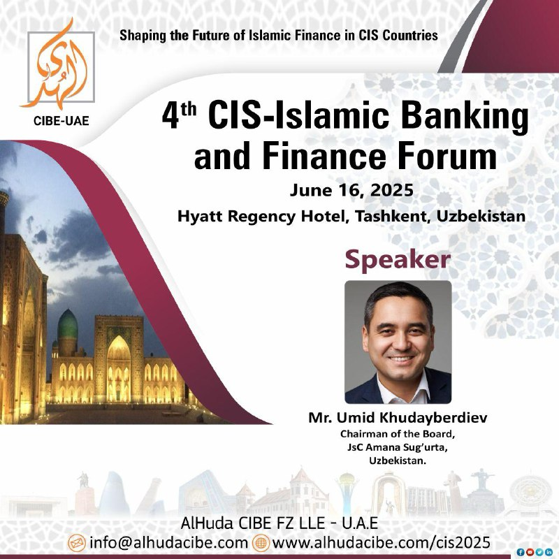

MDH hududida islom moliyasini jadallashtirish!

AlHuda CIBE tomonidan tashkil etilgan “4-MDH – Islom banki va moliya forumi 2025”da bizga qo‘shiling – bu yerda MDH mintaqasi bo‘ylab islom moliyasining kelajagini belgilash uchun istiqbolli mutaxassislar, yetakchi soha mutaxassislari va moliyaviy innovatorlar birlashadi.
📅 Sana: 2025-yil 16-18-iyun
📍 O‘tkazilish joyi: Hyatt Regency mehmonxonasi, Toshkent, O‘zbekiston
Tasdiqlangan spikerimiz – “Amana Sug‘urta” AJ boshqaruvi raisi janob Umid Xudayberdievni ushbu yforumda qimmatli fikrlari va tajribalari bilan “Takaful tizimini rivojlantirishda davlatning roli” mavzusida o‘rtoqlashayotganini e’lon qilishdan mamnunmiz.
🔗 Hoziroq ro‘yxatdan o‘ting yoki qo‘shimcha ma’lumot oling:
📩 Elektron pochta manzili: shaguftta.perveen@alhudacibe.com
📱 Telegram: +971508421423, +971 52 865 5523